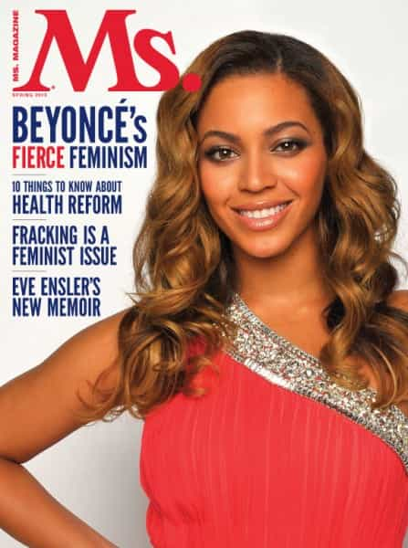

Recently, Tom Junod penned a brief article in Esquire, declaring 42 year-old women to be the most attractive age for a woman. Predictably, he got slammed in the comments, with women quickly showing why they hated the piece (the unasked question: why they were reading it in the first place?). This lead a writer named Anne Brenoff at Huffington Post to write a rebuttal.
Tom Junod
Anne Brenoff
Brenoff’s position—shared by many women—is that men, as a class, oppress women. They believe that this male oppression has led to men ignoring all of women’s positive qualities. Instead of being seen by men as beautiful, talented, intelligent and just about any positive superlative, women are often seen as ugly, mean-spirited and catty. Further, they believe that all this sexism leads men to only judge women by skin-deep beauty standards. Denying woman’s humanity and souls are the bread and butter of the male mindset; this terrible mismeasure of women by men is a fiction invented by the patriarchy.
She goes on to do what women are often wont to do: owning other women’s lives. She mentions three female relatives of hers who apparently transcended the backwards muck of sexism and lived lives on their own terms, undefined by social convention and only concerned with their own well-being and happiness. She glowingly recounts single motherhood, serial monogamy and the elevation of careerism and materialism over all else. Brenoff is offended that man-children like Junod are just now admitting they find older women attractive, as women have been keenly aware how hot and sexy women of every age are. I am assuming this realization pre-dates the patriarchy.
It is obvious how primitive and immature this sort of mindset is. Women feel incredible amounts of shame over their bodies, so instead of learning to grow up and deal with it, they simply pretend that they fit the standard: I’m sexy and you can’t tell me different! while also attacking the standard: GRRR! Those goddamn sexist beauty standards!!! Further, Junod erred because women also feel intense amounts of shame about their age and its relation with sexual attractiveness. Here, it is obvious they ignore the inalienable truth that we will all grow old and, yes, youthful sexual attractiveness will fade.
Brenoff is 64. Any woman in her ’60’s who would still write a piece such as this is immature. Instead of claiming the mantle of aged womanhood and ushering young women into healthy adulthood, she is still on the outside, looking in on adulthood. She is still pretending she is some sort of cultural rebel, some elderly vixen who is chipping away at that glass ceiling erected by men to hold women down.
Women like Brenoff brand themselves as sexy, intelligent and “fierce” and get supremely offended when somebody ruptures that mindset. Brenoff’s reaction to Junod reflects this. She drops a link to the Jezebel reaction to his piece—surprise! It’s hysterical and nonsensical—in the first paragraph and says she won’t call him out, but “help him out.” She then spends the rest of the article with an air of smug indignation about awesome women are and real men appreciate that. Real men will find a woman in her 80’s sexual attractive, if they can only stop thinking with their wayward penises and follow their heart. I wonder if she would swap the sexes in this scenario.
Regardless, the women who agree with Brenoff see themselves as diamonds in the rough, caged birds that whose songs are incredibly beautiful, but those infantile, privileged men refuse to recognize them as such. But all the other birds believe our songs are beautiful! Sorry, but singers don’t get to decide what their listeners will find pleasing to hear. A person simply cannot decide what others desire in their lives. It is puerile to demand other people prop up the delusions you have about your life.

Women like Brenoff can’t see this. Since they have been spending their entire lives weaving a dense web of lies about who they are, it is to be expected they won’t understand why somebody else will not see them as a sexy rockstar of a human. They challenge men to rise above their immaturity and value women for who they really are: people who know more about their positive qualities more than any man ever could. As if masculinity and maturity depends on massaging the egos of women.
I have no doubt there are many intelligent, accomplished women in this world. The healthy ones don’t write narcissistic screeds for HuffPo. Her piece is little more than chest-beating about her life and other women’s lives. Oops, Brenoff didn’t list any accomplishments in her life, so I can safely assume she has no accomplishments, unlike her trio of aunts.
So, what can we take away from this piece by Anne Brenoff? She’s awesome, intelligent and sexually attractive, just like all other women since time immemorial. She thinks Tom Junod is immature, sexist and can’t appreciate the true value of women, which apparently only women themselves have the ability to discern. Real men suck it up and live their lives at the whims of women. If they want to keep a man around, they do. If a woman thinks he is a “jerk-husband” then he is out the door, the man just washed right out of their hair.
I suppose when you spend all your time obsessing over how awesome you are, it can be tough to see that the world does not revolve around you.
Read More: Men Need A Return Of The Male Only Gentleman’s Club
{kind=link}
{kind=link}
{kind=link}